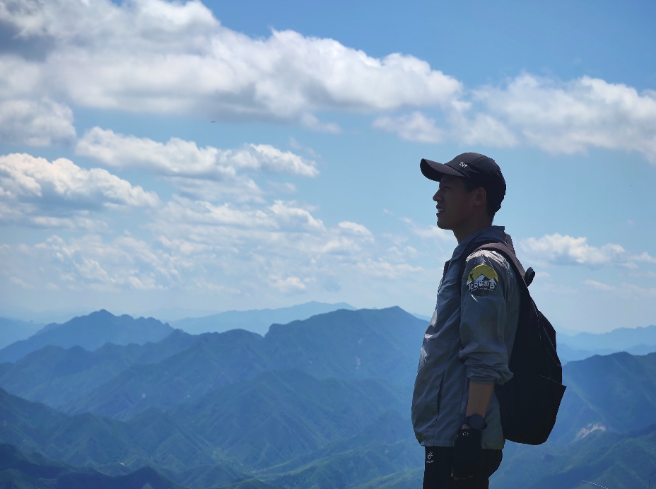
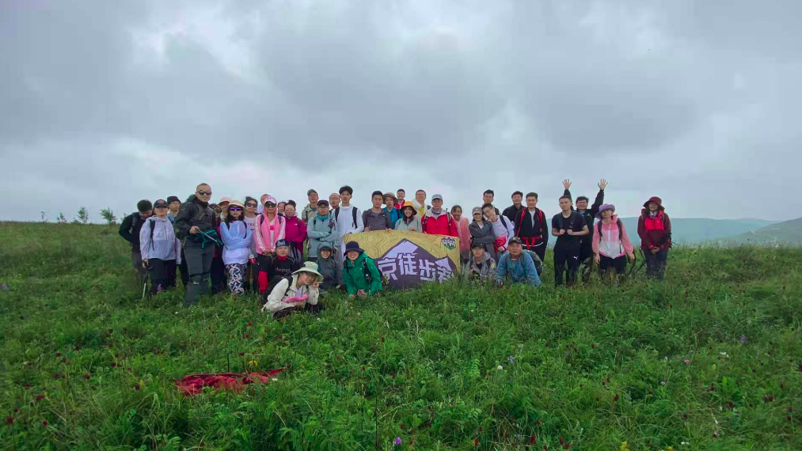

总觉得今天应该有点不一样的事。思虑再三，想来，就写一点东西，聊作纪念吧。
当然，还是先感谢一下小胖儿的徒步望远镜，晓敏的蓝牙闹钟音响还有晓锋的羽毛球，以及还在未来的夜宵和大餐。哈哈哈，一共就这么一点儿爱好，被几位亲拿捏的死死的。平淡而有意义。
对了，因为身份证上的生日和实际过的日子不一致（阴历和阳历这块，老祖宗的问题我也搞不懂），提前很多天收到了公司的蛋糕和红包。哈哈哈，大概是第一次收到生日的红包。
最近的一段日子，仿佛一切都进入了正轨。按部就班的，生活仿佛已经许久没有这么规律。按时上班，吃早饭，吃午饭，吃晚饭。工作等等。当然不是说生活的过于平淡和无聊，身边的小伙伴都很有趣，只是说“规律”而已。仿佛在跟着音乐的节奏奔跑。

先谈谈工作
按日子来算，很快就是入职的六个月了。按公司的规定来算，大概可以算做即将要走出“新手村”了吧。但是总觉得还是哪里差一点。当然了，还是在不断的适应和学习中。也在不断的找寻着自己适合的领域和工作节奏，成长ing。
身边有非常多的好老师，有闭着眼睛不写bug但又和蔼可亲教你做事的大佬，有生活和技术兼顾带我一起玩儿的达人，有一心科研刷榜.批评不断.恨铁不成钢的大神，也有聪明又厉害的程序媛（那当然都是一级保护大熊猫）。
也许是身边儿的好老师太多，有时候我显得有点手足无措，东看看西望望，不知道该去哪里，偷悄悄的窝在角落里不敢讲话。感觉上自己应该是一个内向的人，其实不太爱讲话（你是不是不信），可能是公司的氛围太好，也许是自己太多迷惑想要询问和了解，又也许是被编程语言改变了价值观？（Python的open特质？）但是无论怎样，最近好像显得有些话多，但是...讲道理，每次讲话还是很紧张。
总体来讲，这段时间就是在做事学习然后继续做事。并没有很枯燥，反而充满乐趣。看到有人实现了amazing的功能也会兴奋一阵。有了好点子和同学讨论，也会斗起嘴来忘记吃饭。自己写了烂代码也会吐糟一阵，看到自己的工具被夸赞也会开心很久。
自己其实是一个比较喜欢玩儿的人，刚好又在做一件很酷的事，虽然有时候也会走一点弯路，犯一些错误，但总归是开心的。下班之后吃串烤面筋，整块西瓜。还有羽毛球，虽然自己打的很菜，但是别人打的好啊，虽然我总是输，但是就会有人赢啊，虽然总是被教导，但是还是学不会啊，哈哈哈，orz。
生活上的小事
徒步
首先还是感谢一下两位大佬带我玩，走路真是一件神奇的事情。
还记得小米十周年发布会上，雷军说，2020年突如其来的疫情搞得大家都很焦虑，他也很焦虑，但是没有用，“用积极的心态面对这个复杂的世界可能结果会不一样”，于是他选择每天走十公里。
当我开始走路的时候，我有了一种“好像离偶像更近了一点点”的感觉。蔚蓝的天空，太阳下行走的你，总是会希望来一阵凉风，汗流浃背的时候看到领队就在前面，就又会涌起一点力量。走路总是能让人放空自己，不是吗？看着小山小树小花小草小路小坡还有那没有到终点的路，总会让你收起思绪，不要胡思乱想。
路上还会碰到真实的陌生人，半山腰相遇，也会互相打个招呼，还记得这两次徒步遇到同一个老大爷，哈哈，大概真的是缘分，也佩服这老头儿，年纪这么大走的比我还快。 
有时候也会有意想不到的事儿，比如说突然出现一条小河呀，就需要涉水过去。有的地方路不好走，不小心摔一跤呀。翻过山头，一路都是下坡啊...，路上突然碰到一只小狗跟你抢吃的呀。多像生活，起起伏伏，跌跌撞撞，有时又有惊喜，但是没到终点，就得继续走下去。
奥运会
要说最近的大事儿，肯定跳不过奥运会的。
以前也看，但是很随便的看看开幕式，看看几个关心的比赛。数一数拿了几块奖牌。从来没有像这次这样。大家一起约看奥运会，磕着瓜子儿，吃着西瓜，为支持的选手叫好，吐槽一下不喜欢的对手，比赛到激烈处，仿佛自己更加紧张。自己的电视慢了半拍，被告知已经获胜，又放下心来，淡定的数球。时不时的分享下今天还有什么比赛，梦之队又拿了几块奖牌等等，还有像，“你永远可以相信马龙”，“苏神”，“军神”，“许昕的话不能听”，这些有趣的话与讨论出现在生活中。
看完比赛，吃完瓜，还可以打会儿牌。虽然我总是输，但是有人会赢啊...。
要紧的是，还有机会可以蹭到饭，哈哈哈，这真是给个神仙也不换。
还有他们
诸如葛雍儿脱单ed，子文儿创业ing这种大事，一定是值得再写一篇儿的。以前的小伙伴儿们虽然久不联系，但回忆是时光雕刻在心房的壁画，愈久愈显珍贵。还有跟小胖儿斗嘴，跟晓敏磨叽这种小事，点点滴滴的，总是要记在脑子里。
大部分都真的还不错，就是有点想家，想以前，要是和以前一样，该多好。